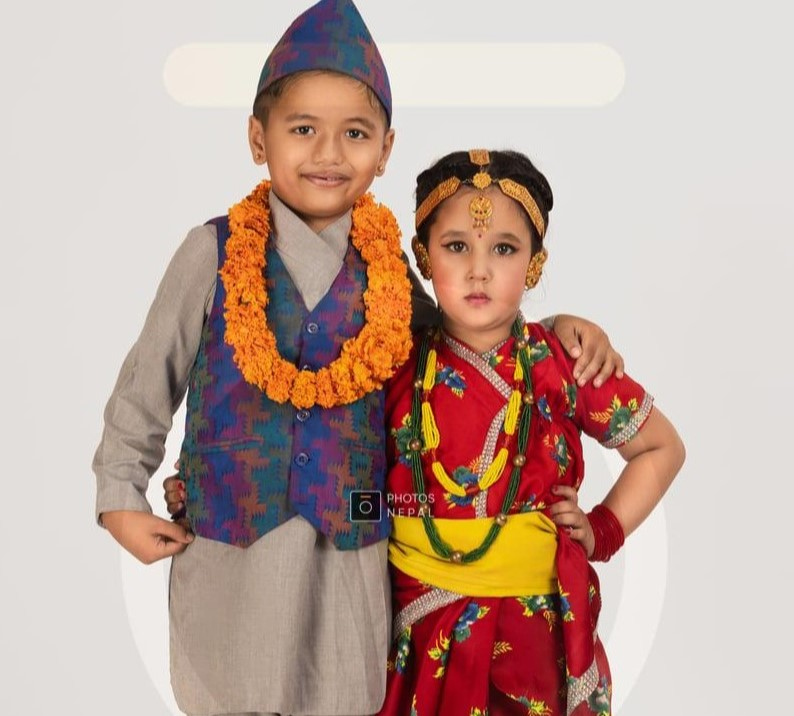
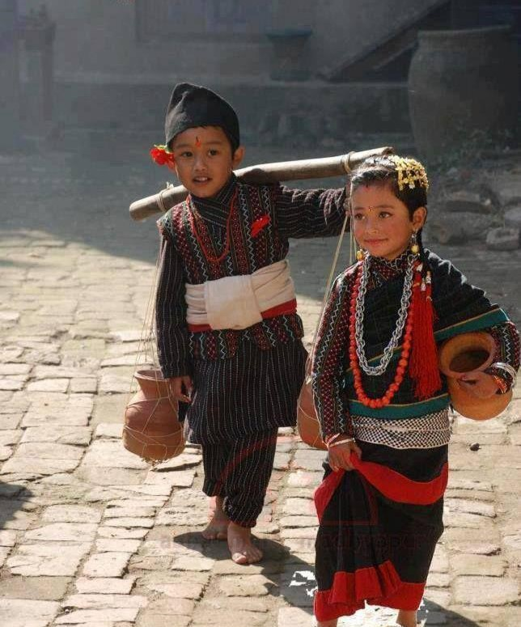
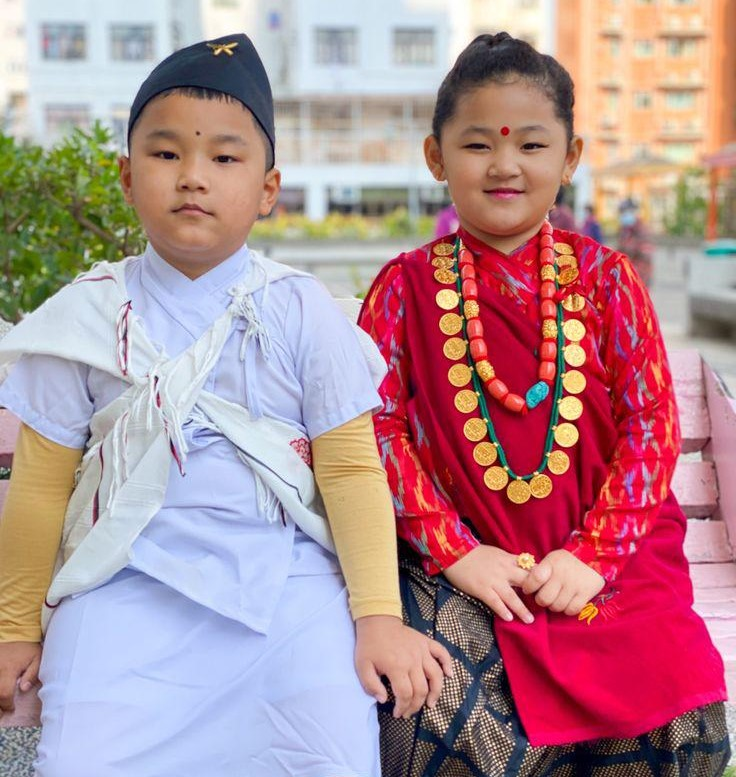
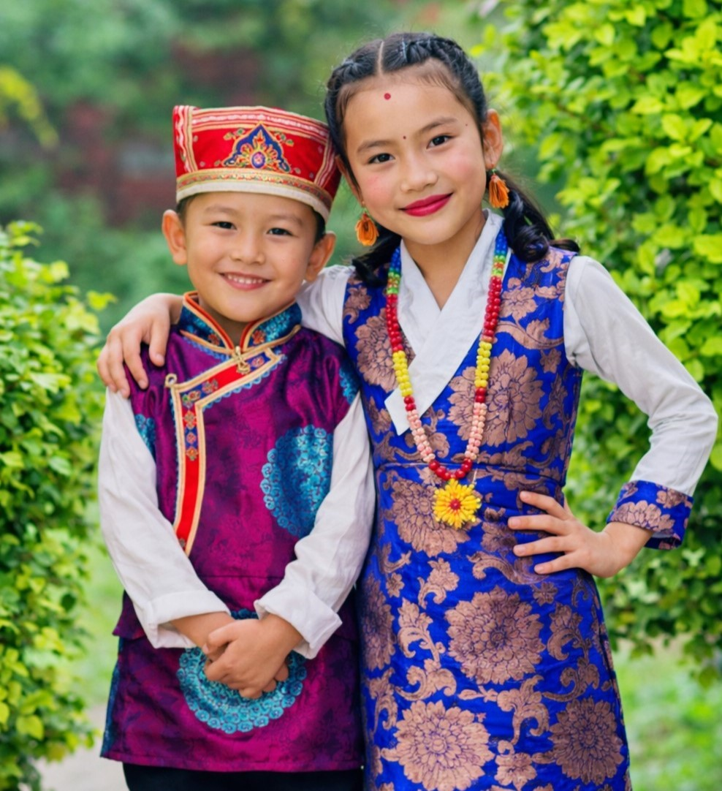

Aligning with Nepal's national dress, Brahmin attire is classic and formal. Men wear the Daura Suruwal (a double-breasted shirt with eight strings and tapered trousers) with a Dhaka topi. Women wear the Gunyo Cholo or a Sari, often paired with a traditional blouse and a gold Tilhari necklace.

Newar attire is defined by its iconic black and red color palette. Women wear the Haku Patasi (black sari with red borders) with a Misālan blouse, while men wear the Tapālan (long shirt) and Suruwal (trousers), often topped with a black Bhadgaunle topi. Both typically wrap a Patuka (waistband) for support and style.

Magar clothing is practical and distinct, featuring the Ghalek (a wrap draped over the shoulder) and the Bhangra (a white chest-pouch for men). Women wear a Phariya (skirt) with velvet blouses and heavy gold jewelry like the Bulaki, while men typically wear a Kacchad (loincloth) and a Bhoto (vest).

Reflecting Himalayan culture, Tamang dress focuses on warmth and vibrant patterns. Women wear a colorful Gunyo Cholo set with a yellow Patuka, while men wear a Bakhu (thick woolen robe) over a Ghyiwa shirt. Both often wear the traditional Tamang Tagi (woolen cap).